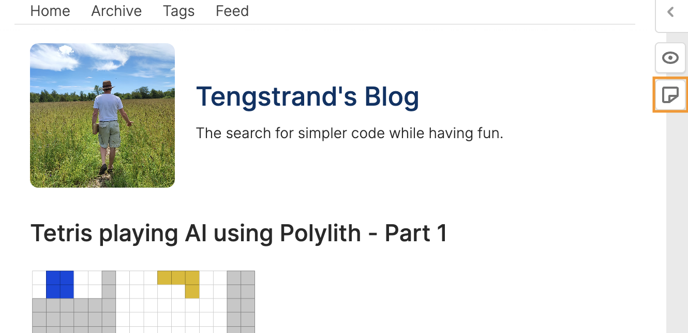

This guide explains how to review blog posts created by me, Joakim Tengstrand.
The review process is handled by Hypothesis, an open-source tool, and you won't be exposed to ads or tracking when using it!
To start reviewing, click on the writing icon in the upper right margin (marked with an orange box in the image below):

If you haven't already, create an account and login. If the popup window doesn't close automatically, you need to close it manually (this is a known problem).
After you have logged in, you can start doing reviews:
Your comments will appear as highlights on the page and others who are logged in can see and reply to them.